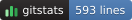
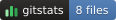
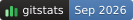
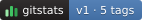
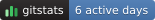

commitsTotal commits
[](https://<your-report-url>/)
authorsPeople who committed[](https://<your-report-url>/)
linesLines of code
[](https://<your-report-url>/)
filesFiles in the repository
[](https://<your-report-url>/)
last-commitMonth of the latest commit
[](https://<your-report-url>/)
releaseNewest tag and the tag count
[](https://<your-report-url>/)
active-daysDays with at least one commit
[](https://<your-report-url>/)